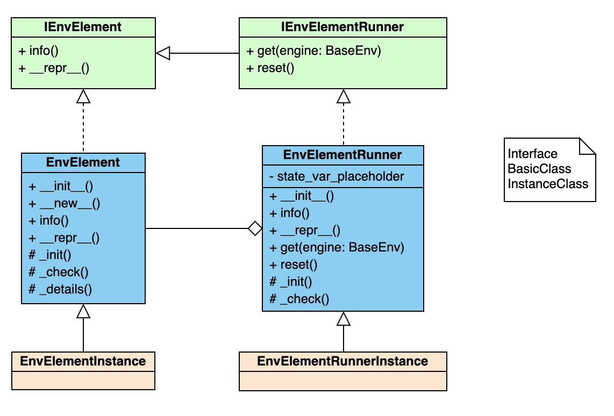

Env Overview¶
BaseEnv¶
(ding/envs/env/base_env.py)
- 概述：
环境模块，是强化学习中重要的模块之一。在一些常见的强化学习任务中，例如 atari 相关任务，mujoco 相关任务，我们所训练的智能体就是在这样的环境中去进行探索和学习。通常，定义一个环境需要从环境的输入输出入手，并充分考虑其中可能的
observation space与action space。OpenAI 所出品的 gym 模块已经帮我们定义了绝大多数常用的学术环境。DI-engine 也遵循 gym.Env 的定义，并在其基础上增加了一系列更为方便的功能，使得环境的调用更为简单易懂。- 具体实现：
我们可以很方便的查阅到，gym.Env 的 定义 中，最为关键的部分在于
step和reset方法。通过给定的observation,step()方法依据输入的action并与环境产生交互，从而得到相应的reward。reset()方法则是对环境进行重置。ding.envs.BaseEnv 继承了 gym.Env，并实现了：BaseEnvTimestep(namedtuple)：定义了环境每运行一步返回的内容，一般包括obs，act，reward，done，info五部分，子类可以自定义自己的该变量，但注意必须包含上述五个字段。BaseEnvInfo(namedlist)：定义了环境的基本信息，例如环境中智能体的数量，观察空间的维度等等，一般包括agent_num，obs_space，act_space，rew_space四部分，其中xxx_space必须使用 envs/common/env_element.py 中的EnvElementInfo进行创建，子类可以自定义自己的该变量，为其增加新的字段。
Note
obs_space和subprocess_env_manager中shared_memory的相关使用存在强依赖，如要使用则必须按照EnvElementInfo来实现。info()：快速查阅当前环境的各种 shape，并显示启用的 wrapper 种类
Note
注意，
info()中会根据 wrapper 的种类自动修改对应的obs_shape/act_shape/rew_shape。如果用户需要添加新的 env wrapper，需要在 wrapper 中实现静态函数new_shape(obs_shape, act_shape, rew_shape)并返回此 wrapper 修改之后的各个 shape。create_collector_env_cfg()：为数据收集创建相应的环境配置文件，与create_evaluator_env_cfg互相独立，便于使用者对数据收集和性能评测设置不同的环境参数，根据传入的初始配置为每个具体的环境生成相应的配置文件，默认情况会获取配置文件中的环境个数，然后将默认环境配置复制相应份数返回create_evaluator_env_cfg()：为性能评测创建相应的环境配置文件，功能同上说明enable_save_replay()：使环境可以保存运行过程为视频文件，便于调试和可视化，一般在环境开始实际运行前调用，功能上代替常见环境中的 render 方法。（该方法可选实现）
此外，ding.envs.BaseEnv 还针对细节做了一些改动，例如
seed(): 对于环境内各种处理函数和 wrapper 的种子控制，外界设定的是种子的种子默认都使用 lazy init，即 init 只设置参数，第一次 reset 时启动环境设定种子
episode 结束时，在 info 这个 dict 中返回
final_eval_reward键值对
Note
对于一个环境的具体创建（例如打开其他模拟器客户端），该行为不应该在
__init__方法中实现，因为存在创建模型实例但不运行的使用场景（比如获取环境observation的维度等信息），推荐在reset方法中实现，即判断运行环境是否已创建，如果没有则进行创建再reset，如果有则直接reset已有环境。如果使用者依然想要在__init__方法中完成该功能，请自行确认不会有资源浪费或冲突的情况发生。Note
关于
BaseEnvInfo和BaseEnvTimestep，如无特殊需求可以直接调用 DI-engine 提供的默认定义，即：from ding.envs import BaseEnvTimestep, BaseEnvInfo
如果需要自定义，按照上文的要求使用
namedtuple(BaseEnvTimestep)/namedlist(BaseEnvInfo)实现即可。Tip
seed方法的调用一般在__init__方法之后，reset方法之前。如果将模型的创建放在reset方法中，则seed方法只需要记录下这个值，在reset方法执行时设置随机种子即可。Warning
DI-engine 对于环境返回的
info字段有一些依赖关系,info是一个 dict，其中某些键值对会有相关依赖要求：final_eval_reward: 环境一个 episode 结束时（done=True）必须包含该键值，值为 float 类型，表示环境跑完一个 episode 性能的度量abnormal: 环境每个时间步都可包含该键值，该键值非必须，是可选键值，值为 bool 类型，表示环境运行该步是是否发生了错误，如果为真 DI-engine 的相关模块会进行相应处理（比如将相关数据移除）。
类继承关系如下图所示：

EnvElement¶
(ding/envs/common/env_element.py)
- 概述：
环境元素基类，
observation，action，reward等可以视为环境元素，该类及其子类负责某一具体环境元素的基本信息和处理函数定义。该类及其子类是 stateless 的，维护静态的属性和方法。- 类变量：
info_template：环境元素信息模板，一般包括维度，取值情况，发送给智能体数据的处理函数，从智能体接收到数据的处理函数_instance：实现单例模型所用的类变量，指向该类的唯一实例_name：该类的唯一标识名
- 类接口方法：
__init__: 初始化，注意初始化完成后会调用_check方法检查是否合法info`: 返回该元素类的基本信息和处理函数__repr__: 返回提供元素说明的字符串
- 子类需继承重写方法：
_init: 实际上的初始化方法，这样实现是为了让子类调用方法__init__时也必须调用_check方法，相当于__init__只是一层 wrapper_check: 检查合法性方法，检查一个环境元素类是否实现了必需属性，子类可以拓展该方法，即重写该方法等价于调用父类的该方法以及实现自身需要检查的部分_details: 元素类详细信息
EnvElementRunner¶
(ding/envs/common/env_element_runner.py)
- 概述：
环境元素运行时基类，使用装饰模式实现，负责运行时相关的状态管理（比如维护一些状态记录变量）和提供可能的多态机制（对静态处理函数返回的结果进行再加工）。 在静态环境元素接口基础上，新增了
get和reset接口。该类将对应的静态环境元素实例作为自己的一个成员变量_core进行管理。- 类变量：
无
- 类接口方法：
info：来源于接口的父类，实际使用时调用静态元素的相应方法__repr__：来源于接口的父类，实际使用时调用静态元素的相应方法get：得到实际运行时的元素值，需要传入具体 env 对象，所有对 env 信息的访问集中在get方法中，建议访问信息通过 env 的 property 实现reset：重启状态，一般需要在 env 重启时对应进行调用
- 子类需继承重写方法：
_init：实际上的初始化方法，这样实现是为了让子类调用方法__init__时也必须调用_check方法，相当于__init__只是一层 wrapper_check：检查合法性方法，检查一个环境元素类是否实现了必需属性，子类可以拓展该方法，即重写该方法——调用父类的该方法 + 实现自身需要检查的部分
Note
EnvElement和EnvElementRunner两个类构成完整的环境元素，其中前者代表静态不变的信息（stateless），后者负责运行时变化的信息（stateful），建议与特定环境元素相关的状态变量一律放在这里维护，env 中只维护通用的状态变量环境元素部分简易的类逻辑图如下：

Note
所有代码实现中命名建议一般情况使用单数，但如果使用复数可以使某局部代码块逻辑更清晰，该部分也可自由选择。
所有代码实现秉承 自身对外界输入质疑，自身对外界输出负责 的思想，对输入参数做必要的 check，对输出（返回值）明确规定其格式
环境元素的键值如果为空时，一律使用
None